Sustainable Systems Fall 2026: Class 3 Demonstration
🧰 System Behavior → Graphic Behavior
📍 Introduction
Complex systems are often difficult to perceive directly.
They may be too large, too slow, invisible, interconnected, or distributed across space and time.
Design can make these relationships legible.
The examples in this demo show how artists, scientists, cartographers, designers, and researchers have developed graphic strategies for representing complex phenomena.
Use These as Tools, Not Templates
Do not simply copy the appearance of these examples.
Instead, ask:
- What behavior is being represented?
- What graphic operation makes that behavior visible?
- Could that operation help communicate your system?
These examples are resources for both Part I — Experiment and Part II — Develop.
◼️ Connection
Humboldt — Isotherms
Phenomenon
Climate conditions distributed across geographic space
Graphic Operation
Position · Line · Connection
Translation
Measurement → position
Equal temperature → connecting line
Separate observations → spatial pattern
What relationships become visible when separate points are connected?
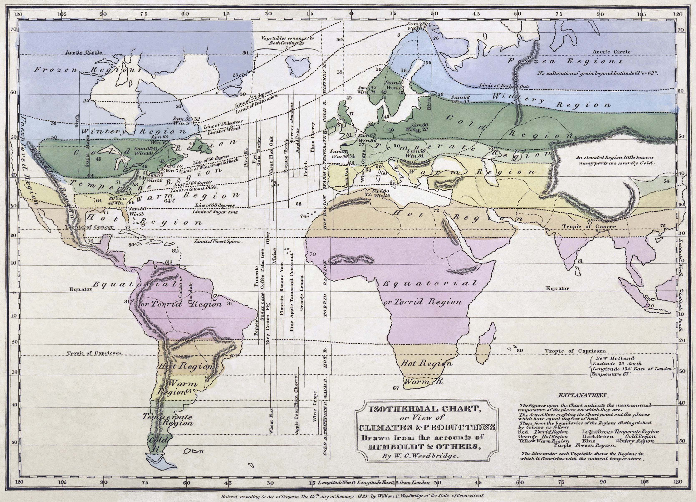
Harry Beck — London Underground
Phenomenon
A complex transportation network
Graphic Operation
Line · Position · Simplification · Hierarchy
Translation
Route → line
Station → point
Transfer → intersection
Geographic complexity → simplified structure
What information can be distorted or removed to make relationships clearer?
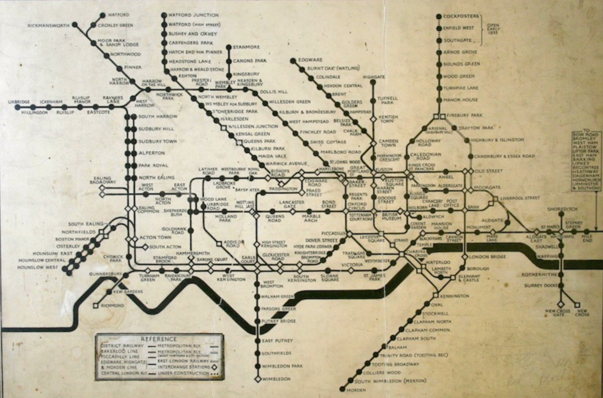
Minard — Flow Maps
Phenomenon
Movement across geographic space
Graphic Operation
Line · Width · Direction · Position
Translation
Movement → line
Quantity → width
Direction → orientation
Geography → position
Could one property of your system become a property of a line?
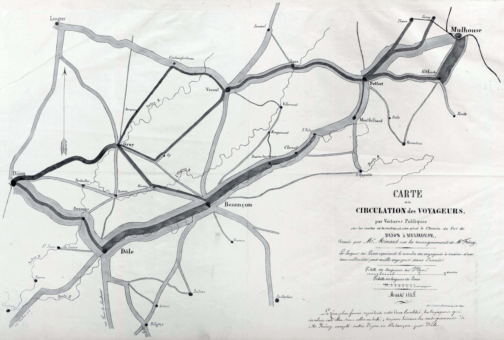
◼️ Accumulation
Keeling — Atmospheric CO₂
Phenomenon
Atmospheric CO₂ changing through time
Graphic Operation
Position · Sequence · Line
Translation
Time → horizontal position
Concentration → vertical position
Repeated measurement → trajectory
How can repeated observations reveal accumulation?
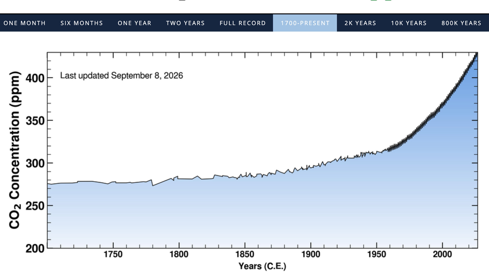
Neurath / Isotype — Quantity Through Repetition
Phenomenon
Quantities and differences between groups
Graphic Operation
Repetition · Density · Standardization
Translation
Unit → repeated symbol
Greater quantity → greater repetition
Difference → visible pattern
Could accumulation be shown through repetition rather than size?
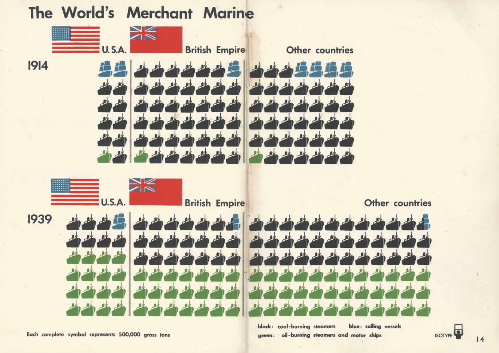
Nightingale — Polar Area Diagrams
Phenomenon
Changing quantities through time
Graphic Operation
Area · Sequence · Comparison
Translation
Time → radial sequence
Quantity → area
Difference → visual magnitude
How can quantity become spatial?
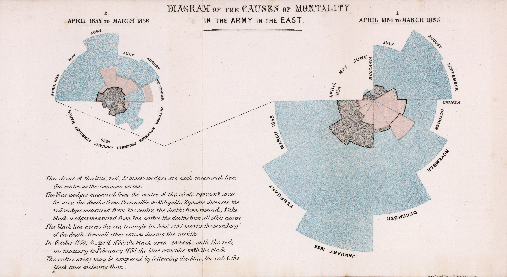
◼️ Feedback
Cybernetic Feedback Diagrams
Phenomenon
A system in which outputs influence subsequent inputs
Graphic Operation
Loop · Direction · Connection
Translation
Process → node
Influence → arrow
Return → loop
Feedback → repeated circulation
How can a drawing show that an effect becomes a new cause?
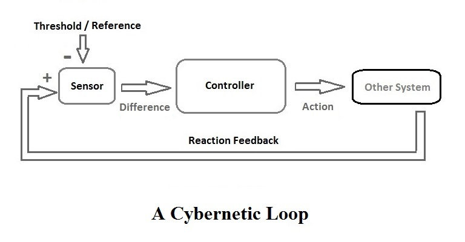
Causal-Loop Diagrams
Phenomenon
Relationships that reinforce or counteract change
Graphic Operation
Connection · Direction · Loop · Sign
Translation
Variable → node
Causal relationship → arrow
Amplification → reinforcing loop
Counteraction → balancing loop
Can the viewer see how change moves through the system and returns?
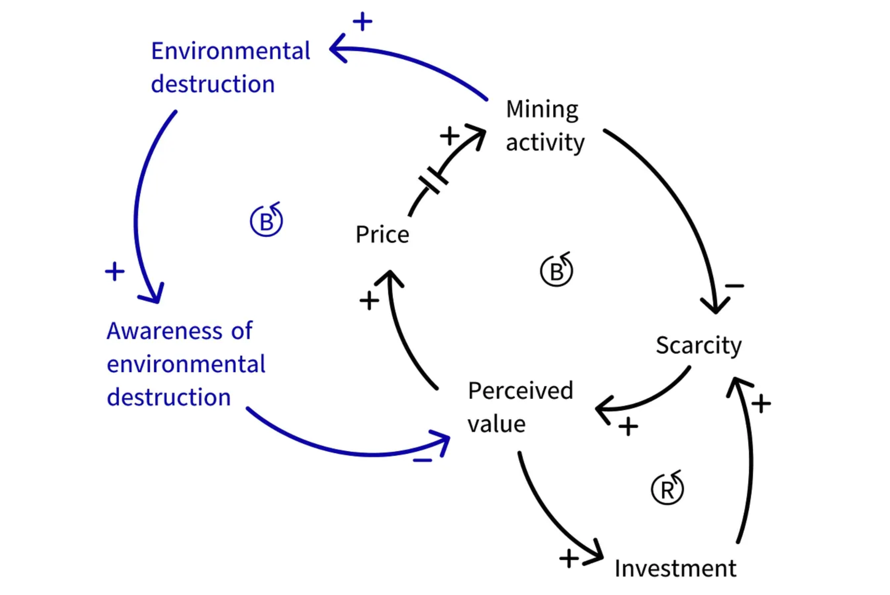
Ecological Feedback
Phenomenon
Interacting environmental processes
Graphic Operation
Cycle · Connection · Repetition
Translation
Process → stage
Influence → connection
Recurrence → cycle
Amplification → repeated sequence
How can a circular structure communicate behavior rather than simply connection?
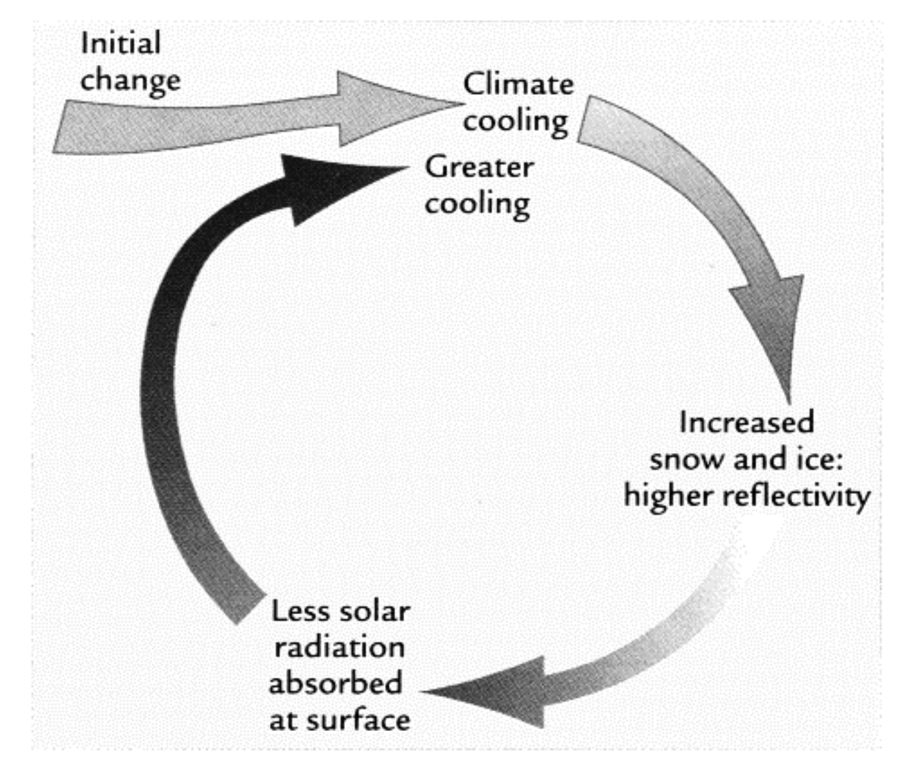
◼️ Threshold
Phase Diagrams
Phenomenon
Conditions under which a system changes state
Graphic Operation
Field · Boundary · Position
Translation
Condition → position
System state → field
Threshold → boundary
State change → boundary crossing
How can a boundary represent a change in system behavior?
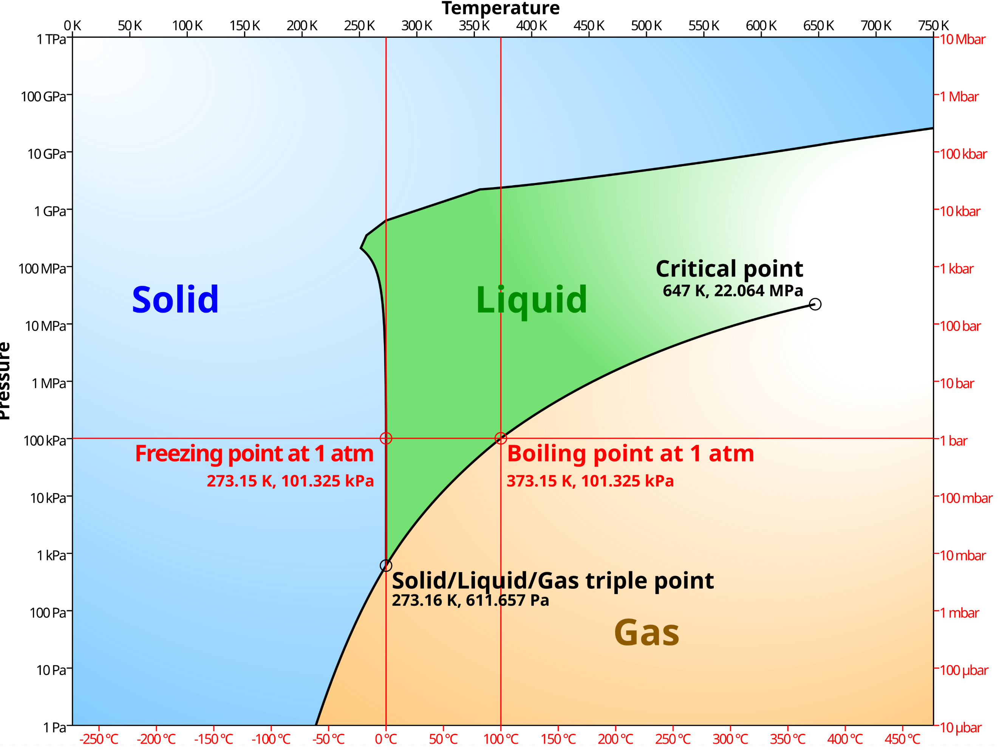
Hydrograph / Flood Stage
Phenomenon
Changing water level relative to a critical condition
Graphic Operation
Line · Reference · Crossing
Translation
Time → sequence
Water level → position
Critical condition → reference line
Threshold event → crossing
How can the viewer immediately recognize when a critical condition has been exceeded?
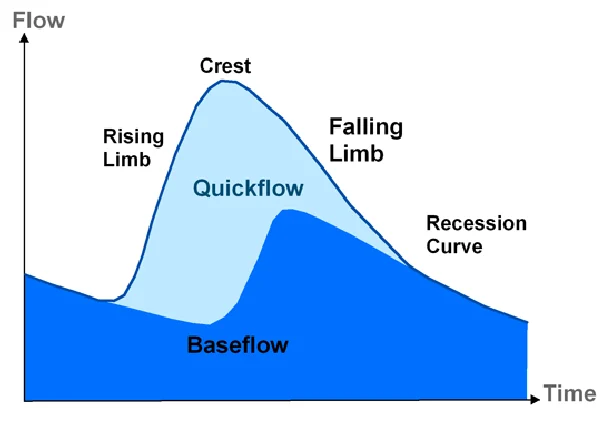
Planetary Boundaries
Phenomenon
Multiple Earth-system processes approaching or exceeding limits
Graphic Operation
Boundary · Radius · Comparison · Organization
Translation
Process → sector
Condition → radial position
Threshold → boundary
Increasing risk → outward movement
◼️ Time / Acceleration
Étienne-Jules Marey — Chronophotography
Phenomenon
Movement unfolding through time
Graphic Operation
Sequence · Repetition · Spacing
Translation
Time → sequence
Movement → displacement
Speed → spacing
Acceleration → changing spacing
Can changing distance between marks communicate changing speed?
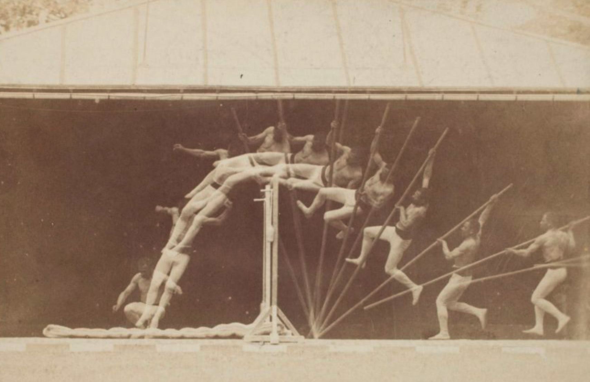
Eadweard Muybridge — Sequential Photography
Phenomenon
Movement broken into successive moments
Graphic Operation
Frame · Sequence · Interval
Translation
Moment → frame
Time → sequence
Movement → changing position
What becomes visible when continuous change is divided into discrete states?
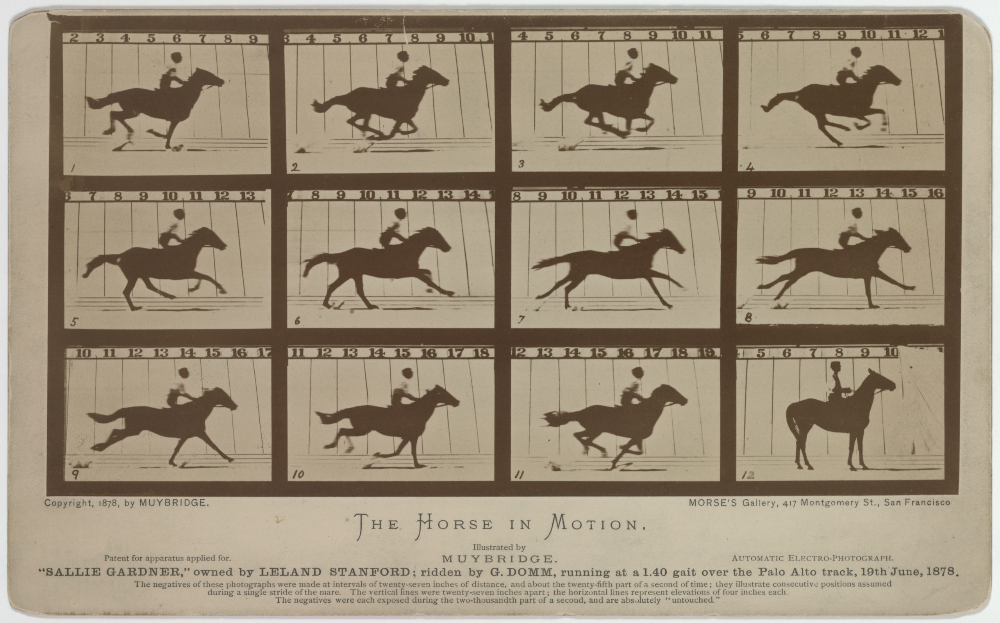
Climate Spiral — Ed Hawkins
Phenomenon
Global temperature change through time
Graphic Operation
Position · Rotation · Motion · Threshold
Translation
Time → rotation
Temperature → distance
Warming → outward movement
Threshold → boundary
How can time become spatial movement?
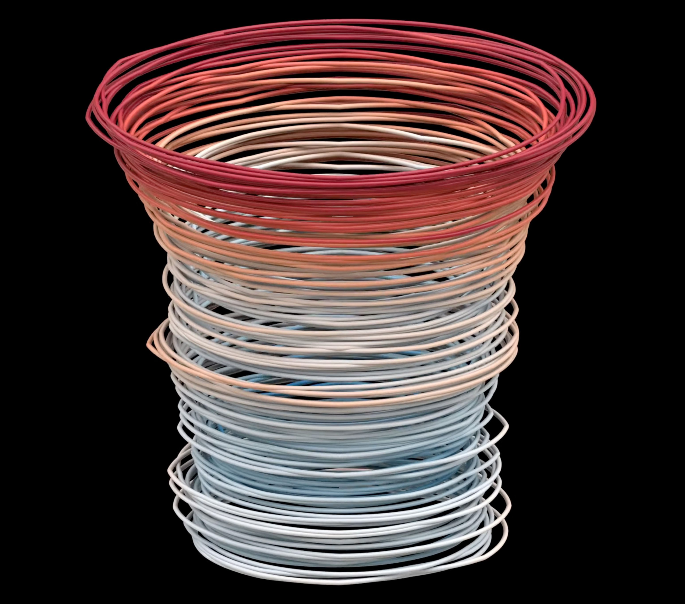
◼️ Interdependence
Sankey — Energy Flow
Phenomenon
Energy moving and dividing through a system
Graphic Operation
Flow · Width · Branching · Connection
Translation
Energy → line
Quantity → width
Distribution → branching
Loss → narrowing
How can the structure of a line communicate both connection and quantity?
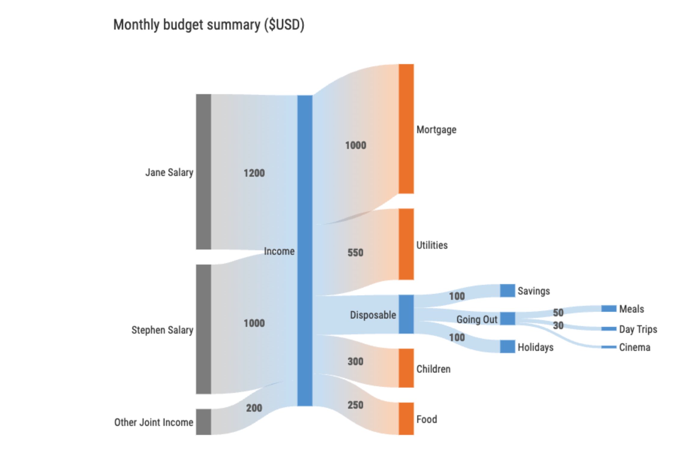
Minard — Napoleon’s Russian Campaign
Phenomenon
Movement, loss, geography, temperature, and time
Graphic Operation
Position · Width · Direction · Sequence
Translation
Army → band
Quantity → width
Movement → direction
Time → progression
Loss → narrowing
How can several kinds of information operate within one graphic structure?

Ecological Food Webs
Phenomenon
Multiple organisms connected through exchanges of energy and matter
Graphic Operation
Node · Connection · Network · Density
Translation
Entity → node
Relationship → line
Dependency → connection
System complexity → network density
How can individual relationships reveal a larger system?
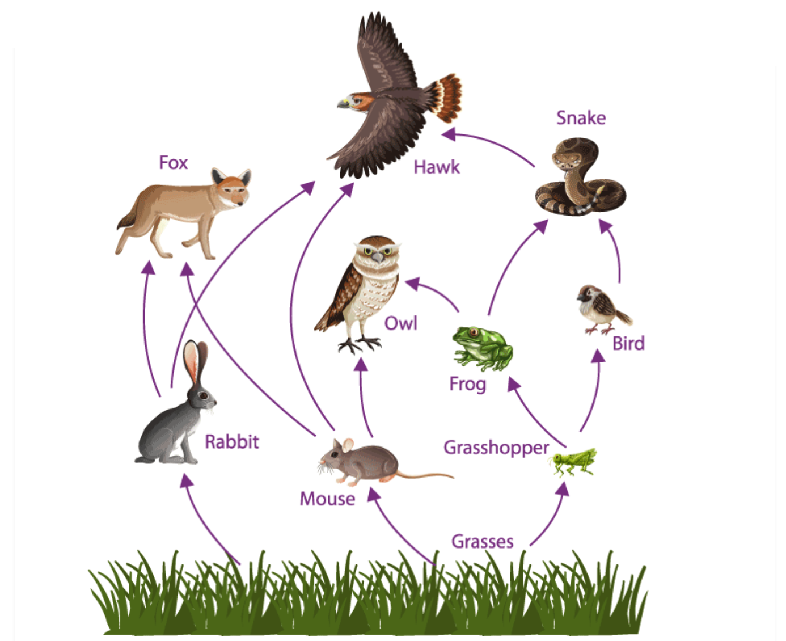
◼️ Scale
Powers of Ten — Eames
Phenomenon
Relationships that become visible at different spatial scales
Graphic Operation
Frame · Sequence · Magnification
Translation
Scale → frame
Change in magnitude → zoom
New information → changing field of view
What becomes visible—or disappears—when scale changes?
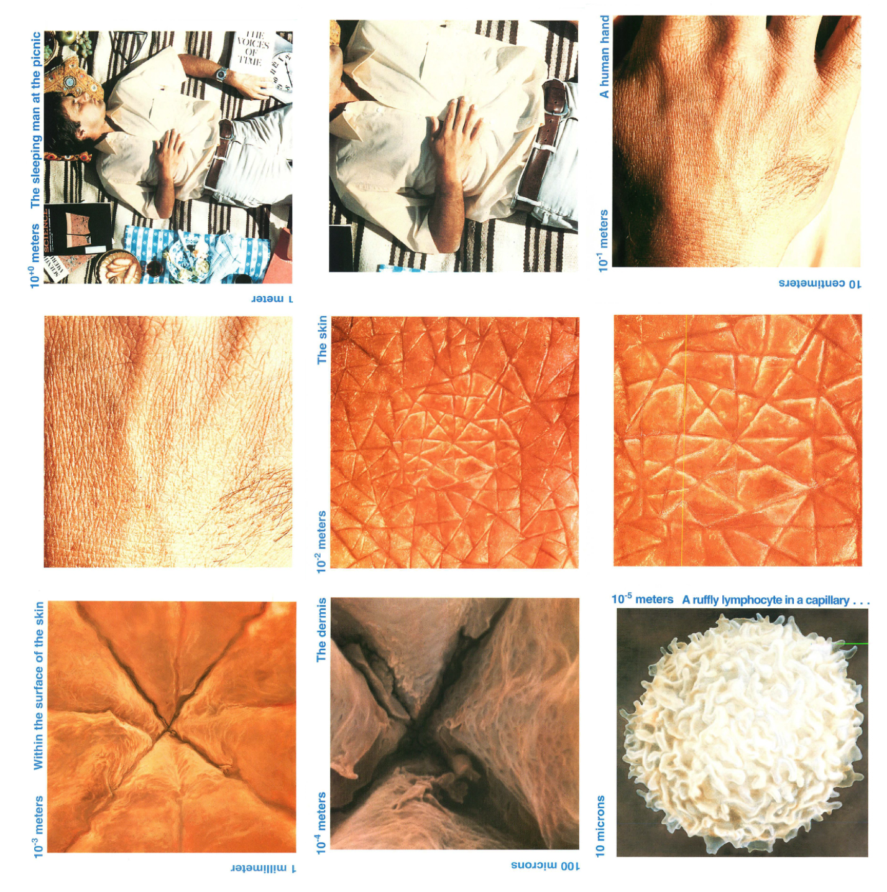
Cartographic Scale
Phenomenon
The same territory represented at different levels of resolution
Graphic Operation
Selection · Reduction · Hierarchy
Translation
Scale → level of detail
Importance → selection
Complexity → reduction
What information becomes necessary at one scale and unnecessary at another?
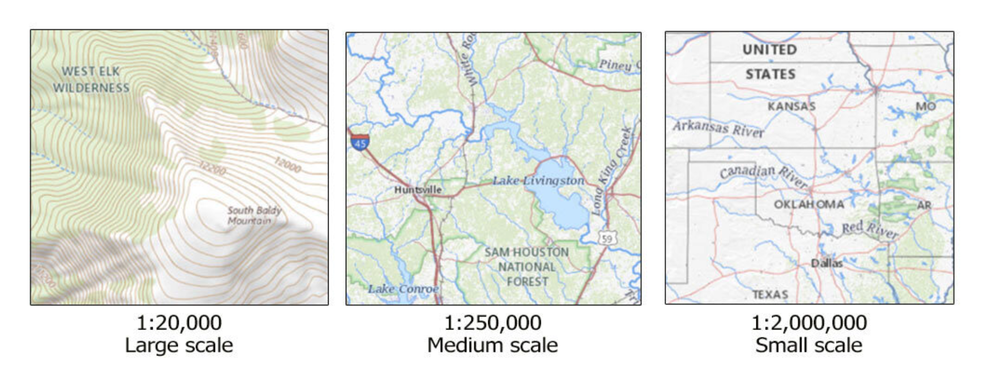
Nested System Diagrams
Phenomenon
Systems existing within larger systems
Graphic Operation
Containment · Size · Hierarchy · Nesting
Translation
System → shape
Larger system → container
Hierarchy → relative size
Relationship → nesting
Can scale reveal that one system exists inside another?
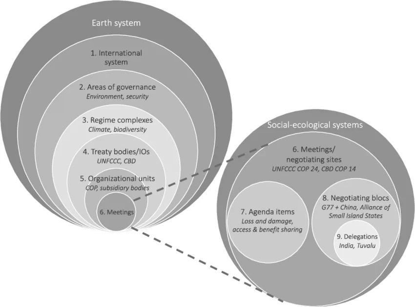
◼️ Apply
From Precedent → Experiment
Do not ask:
What should my drawing look like?
Ask:
What does my system do?
Then identify a graphic operation that might make that behavior visible.
| System Behavior | Possible Graphic Operations |
|---|---|
| Connection | line · point · intersection |
| Accumulation | repetition · density · growth |
| Feedback | loop · return · recurrence |
| Threshold | boundary · crossing · contrast |
| Time / Acceleration | sequence · spacing · displacement |
| Interdependence | network · branching · overlap |
| Scale | nesting · hierarchy · magnification |